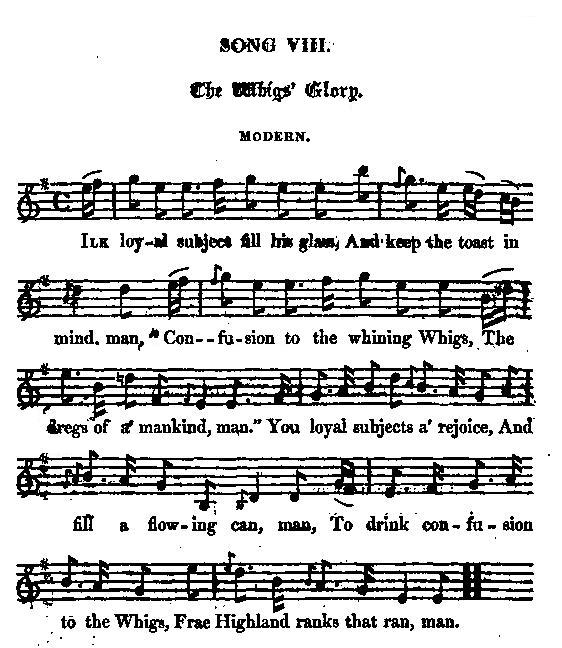

The Whig's Glory
La gloire des Whigs
The Battle of Falkirk
From Hogg's "Jacobite Songs" Volume II N°AJ8, page 407, 1821
Tune - Mélodie"The Whig's Glory"
from Hogg's "Jacobite Relics" 2nd Series Annex Jacobite Songs N°8 page 407
Sequenced by Christian Souchon

|
To the tune:
Hogg gives no information as to the origin of the tune to which this "modern" song should be sung. Source "The Fiddler's Companion" (cf. Liens). |
A propos de la mélodie:
Hogg ne donne pas d'information sur l'origine du timbre accompagnant ce "chant moderne". |

|
THE WHIGS' GLORY
MODERN (In Hogg's days) 1. Ilk loyal subject fill his glass, And keep the toast in mind, man "Confusion to the whining Whigs, The dregs of a' mankind, man. " You loyal subjects a' rejoice, And fill a flowing can, man, To drink confusion to the Whigs Frae Highland ranks that ran, man. 2. Wha ever saw the Whiggish louns At ought come better speed, man? Their shanks were o' the very best, And stood them in gude stead, man. The Highlandmen awhile pursued, But turned at last, .and swore, man, " Hersel had peated mony a race, " But ne'er was peat pefore, man." 3. When they could such offence avoid, To fight they thought it sin, man; And none can say that they did wrang, In saving off their skin, man. Then all you noble sons of war, Let this your maxim be, man, No man should ever stand and fight, When he has room to flee, man. 4. 'Tis fit you vaunt most manfully Of daring deeds of skaith, man ; But if your en'mies be so mad As run the risk of death, man, Be sure that you prove wiser men, And live while yet you may, man, For he that falls is not so safe As he that runs away, man. Source: "The Jacobite Relics of Scotland, being the Songs, Airs and Legends of the Adherents to the House of Stuart" collected by James Hogg, volume II published in Edinburgh by William Blackwood in 1821. |
LA GLOIRE DES WHIGS
Moderne (à l'époque de Hogg) 1. Ras bord vos verres, s'il vous plait! Ayez ce toast en tête: "Whig, rebut de l'humanité, Je bois à ta défaite!" Réjouissez-vous, loyaux amis, Remplissez-les ces verres! Face aux rangs des Highlands, les Whigs Tels des rats détalèrent. 2. A-t-on jamais vu ces marauds Faire autant diligence? Et les jambes de ces héros Avoir tant d'assurance? Les Gaëls avaient fui d'abord, Puis ils se ravisèrent, Jurant: "Nous sommes les plus forts. Retournons en arrière." 3. Si l'on peut éviter l'affront, On rengaine sa lame. Quand on veut sauver sa peau, l'on N'encoure pas le blâme. Telle est nobles fils de Bellone Désormais la maxime: S'il peut fuir, de lutter personne Ne doit plus faire mine. 4. S'il sied de vanter crânement Ses hauts faits, sa vaillance, Quand ton adversaire dément Risque son existence, Soit plus sage que lui, va-t-en, Il vaut mieux que tu vives: Celui qui tombe est moins vivant Que celui qui s'esquive. (Trad. Christian Souchon (c) 2010) |
| More about Bacchanalian sons? Click here . | Pour en savoir plus sur les chansons à boire, cliquer ici . |